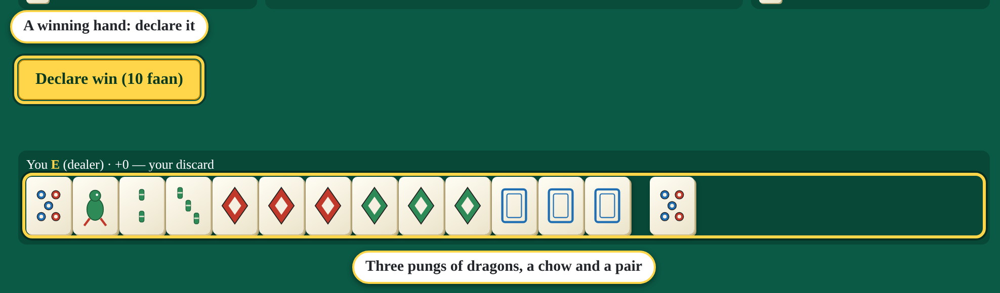
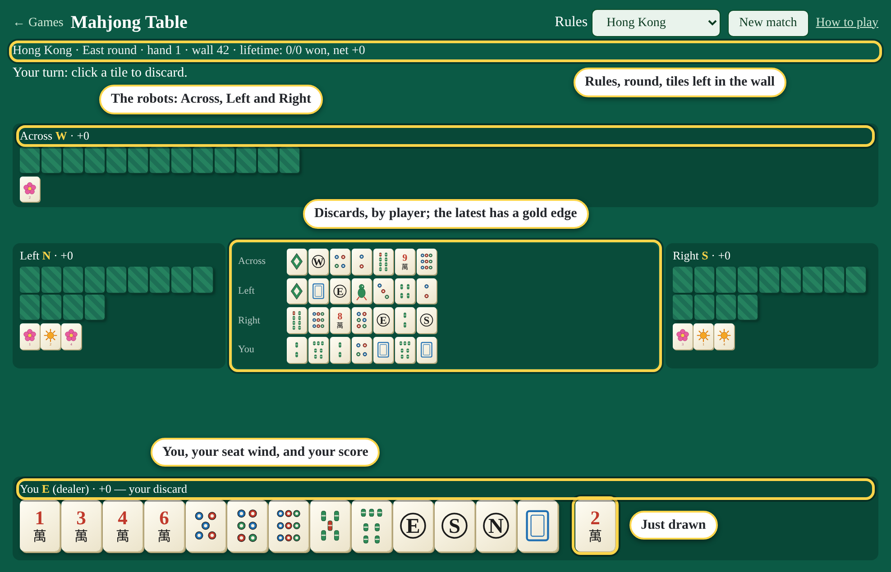
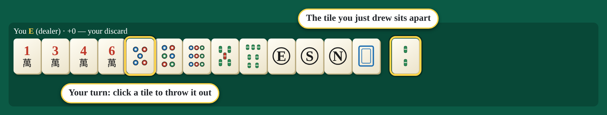
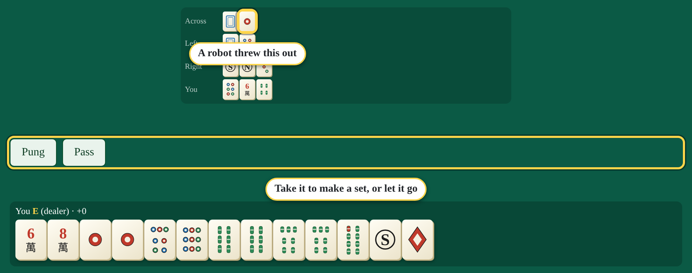
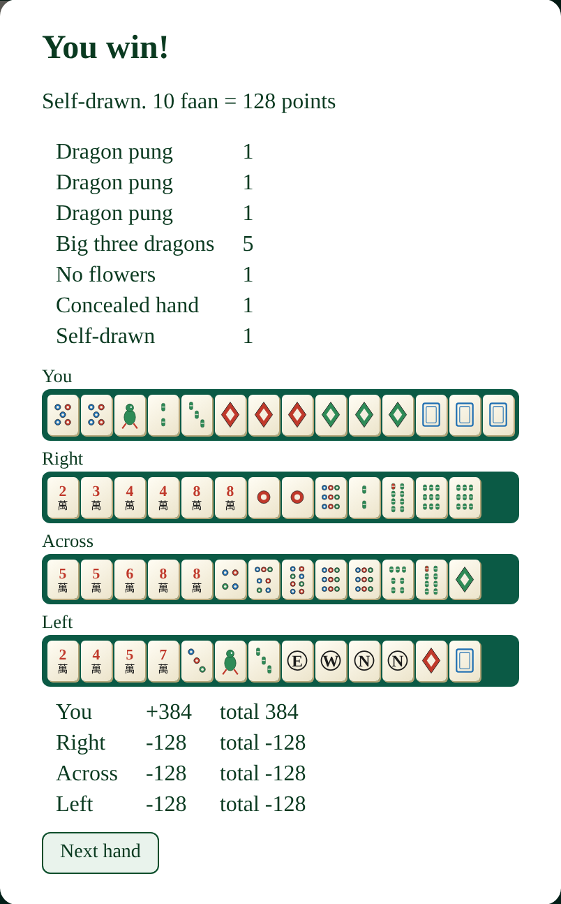
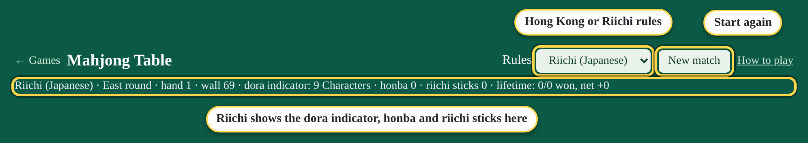
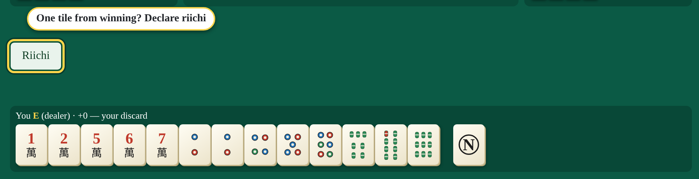
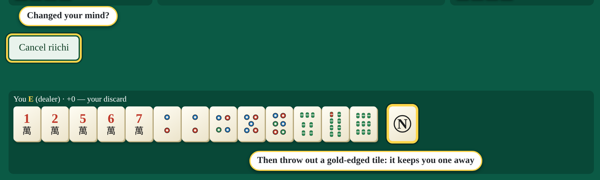

The tiles
- Three suits numbered 1 to 9: characters (marked 萬), dots (circles) and bamboo (sticks; the 1 is a bird).
- Winds (E, S, W, N) and dragons (red, green, and white, shown as a blue frame).
- Four of each. Hong Kong rules add flowers and seasons: bonus tiles that are put aside by themselves (you get a replacement) and can add to your score.
A winning hand
Fourteen tiles made of four sets and a pair. A set is:
- a pung: three the same,
- a chow: three in a row in one suit (not winds or dragons),
- or a kong: four the same (it counts as one set, and you draw an extra tile).

The hand also has to score enough: 3 faan in Hong Kong rules, one yaku (scoring feature) in Riichi.
The table
You're at the bottom; the robots sit Right, Across and Left. You see their sets once they've shown them, and every tile thrown out, but not their hands.

Your turn
You draw a tile automatically, then click a tile to throw it out. The one you just drew sits apart at the right, so you can see what came in.

Claiming a discard
When a robot throws out a tile you can use, buttons appear. Take it to complete a set, which goes face up beside your hand, then throw out a tile. Or Pass.

- Pung or Kong: from anyone.
- Chow: only from the player just before you (on your left).
- Win: from anyone, if that tile completes your hand.
A hand with no claimed sets is concealed, which is worth more.
Winning
When the tile you draw completes your hand, a Declare win button shows what it's worth. When someone else's discard completes it, the button says Win!. The hand ends and everyone's tiles are shown, with how your score was made up.

If the wall runs out before anyone wins, the hand is a draw. A match is one round of hands (the East round); scores carry from hand to hand.
Hong Kong or Riichi

- Hong Kong: 144 tiles with flowers and seasons; a winning hand needs 3 faan; scores are counted in faan.
- Riichi (Japanese): 136 tiles, no bonus tiles; a hand needs at least one yaku; scores in han and fu, with dora (bonus tiles named by the indicator on the info line) and riichi.
Changing the rules starts a new match.
Riichi (Riichi rules)
When your hand is concealed and one tile from winning, you can declare riichi: you bet 1,000 points, and your hand scores more if you win.

Press Riichi, then throw out a gold-edged tile: those are the throws that keep you one away. From then on your hand is locked: each turn you throw out what you draw, unless it wins.

Furiten: if you've thrown out a tile that would complete your hand, you can't win on someone else's discard; only by drawing it yourself. Your label shows "furiten" when this applies.
Quick reference
| Winning hand | Four sets (pung, chow, kong) + a pair, and enough score |
|---|---|
| Your turn | Draw (automatic), click a tile to throw it out |
| Pung, kong | Claim from anyone |
| Chow | Claim only from the player before you |
| Minimum score | Hong Kong 3 faan; Riichi one yaku |
| Riichi | Concealed and one away: bet 1,000, hand locks |